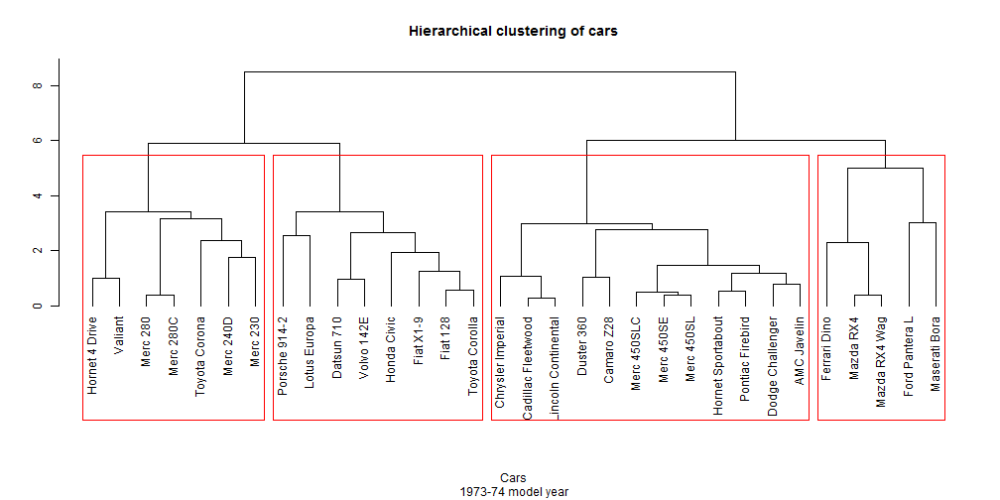

A short description:
In data mining, hierarchical clustering is a method of cluster analysis which seeks to build a hierarchy of clusters
Source: Wikipedia
Stephan
Coursera student
A short description:
In data mining, hierarchical clustering is a method of cluster analysis which seeks to build a hierarchy of clusters
Source: Wikipedia
We use the mtcars data set, as provided by R.
The data was extracted from the 1974 Motor Trend US magazine, and comprises fuel consumption and 10 aspects of automobile design and performance for 32 automobiles (1973-74 models).
An extract:
| mpg | cyl | disp | hp | drat | wt | qsec | vs | am | gear | carb | |
|---|---|---|---|---|---|---|---|---|---|---|---|
| Mazda RX4 | 21.00 | 6.00 | 160.00 | 110.00 | 3.90 | 2.62 | 16.46 | 0.00 | 1.00 | 4.00 | 4.00 |
| Mazda RX4 Wag | 21.00 | 6.00 | 160.00 | 110.00 | 3.90 | 2.88 | 17.02 | 0.00 | 1.00 | 4.00 | 4.00 |
| Datsun 710 | 22.80 | 4.00 | 108.00 | 93.00 | 3.85 | 2.32 | 18.61 | 1.00 | 1.00 | 4.00 | 1.00 |
| Hornet 4 Drive | 21.40 | 6.00 | 258.00 | 110.00 | 3.08 | 3.21 | 19.44 | 1.00 | 0.00 | 3.00 | 1.00 |
| Hornet Sportabout | 18.70 | 8.00 | 360.00 | 175.00 | 3.15 | 3.44 | 17.02 | 0.00 | 0.00 | 3.00 | 2.00 |
| Valiant | 18.10 | 6.00 | 225.00 | 105.00 | 2.76 | 3.46 | 20.22 | 1.00 | 0.00 | 3.00 | 1.00 |
Performing hierarchical clustering on the sample data identifies basically four clusters of car types:

The App
Hierarchical clustering on mtcars data set
allows for flexible choice of methods and a flexible choice of clusters.
Enjoy!